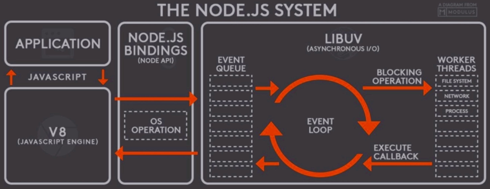

Node.js Internal
开篇文章记录下有关 Node.js 的一些内容（不定期更新）。
基本结构

- V8：JS 引擎。
- Node.js Bindings：包含 Node.js 在 C++ 层的 API 实现，以及在 JS 层的映射；
- libUV：提供独立于平台的系统功能抽象，支持异步 IO。
- 由 epoll、kqueue、IOCP、事件端口支持的全功能事件循环；
- 异步 TCP 和 UDP 套接字；
- 异步 DNS 解析；
- 异步文件和文件系统操作；
- 文件系统事件；
- ANSI 转义码控制 TTY；
- 带套接字共享的 IPC，使用 Unix 域套接字或命名管道 (Windows)；
- 子进程；
- 线程池；
- 信号处理；
- 高分辨率时钟；
- 线程和同步原语。
- 单线程模型：主线程执行 Top-level 代码，加载模块、注册事件回调。然后启动事件循环，I/O 类、计算密集型任务交由专门线程处理。线程完成后，事件循环在通过各个阶段调用对应回调处理资源；
事件循环
- 事件循环的操作顺序：
- timers：执行由 setTimeout() 和 setInterval() 设定的回调；
- pending callbacks：执行被延迟到下一个循环迭代的 I/O 回调；
- idle, prepare：内部使用；
- poll：检索新的 I/O 事件；执行与 I/O 相关的回调（除关闭回调、由定时器调度的回调和 *setImmediate()*）；节点会在适当的时候阻塞在这里；
- check：执行由 setImmediate() 设定的回调；
- close callbacks：执行关闭回调，如 *socket.on(‘close’, …)*。
┌───────────────────────────┐
(phase) ┌─>│ timers │ [Callback Queue]
│ └─────────────┬─────────────┘
│ ┌─────────────┴─────────────┐
│ │ pending callbacks │ [Callback Queue]
│ └─────────────┬─────────────┘
│ ┌─────────────┴─────────────┐
│ │ idle, prepare │ [Callback Queue]
│ └─────────────┬─────────────┘ ┌───────────────┐
│ ┌─────────────┴─────────────┐ │ incoming: │
│ │ poll │ <─── ┤ connections, │ [Callback Queue]
│ └─────────────┬─────────────┘ │ data, etc. │
│ ┌─────────────┴─────────────┐ └───────────────┘
│ │ check │ [Callback Queue]
│ └─────────────┬─────────────┘
│ ┌─────────────┴─────────────┐
└──┤ close callbacks │ [Callback Queue]
└───────────────────────────┘
评论 | Comments